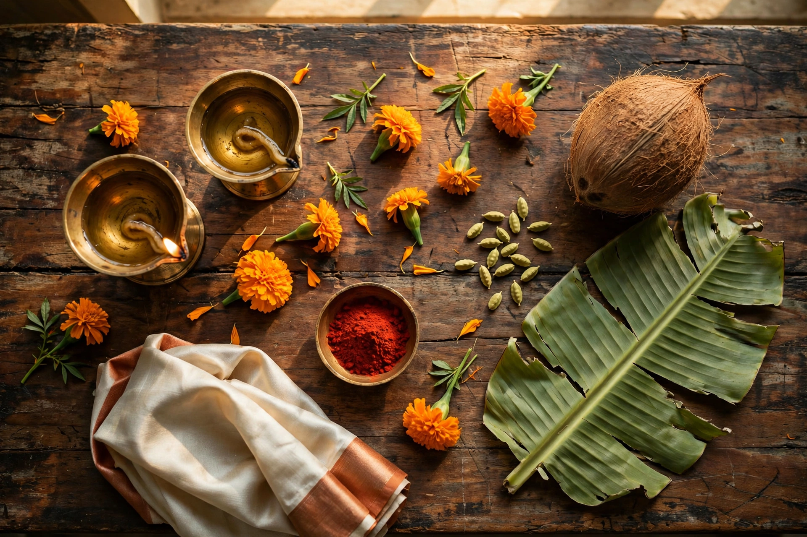

The festival wheel
One circle, twelve months — November 2026 to October 2027. Tap any lamp-dot to open that festival.
How to read it
Start at the top and go clockwise: each slice is a month, each dot is a festival on its date. Festivals bunch up in March–April and again in September–October — those are the two big seasons.
Tip: star a festival to keep it at the top of your coming-up list.
Coming up
The next six festivals, nearest first — with days to go and how ready your prep list is.
Browse the year
Pick a month to see every festival in it — including your own occasions.
Long weekends of 2027
Six stretches worth booking trains for. Dates are from the central government holiday list; festival dates can shift by a day where the moon decides.

Prep starts a week early, not the night before.
Every festival in this app carries a short prep list — open it, tick things off, and the day itself stays calm.
How festival dates actually work
Six short explainers — no jargon, no panchang degree needed.
Keep it, copy it, clear it
Everything you tick, star or add lives only in this browser — on your device, nowhere else.